Instalación y configuración de Windows Server 2019
1.- Creación de la MV (máquina virtual).
Dentro del software de virtualización crearemos una máquina virtual llamada Server2019-fjcg2122, destinada a la instalación del sistema Windows Server 2019, cuya versión de evaluación en formato ISO se puede descargar del siguiente enlace. Asigna los siguientes recursos hardware a la MV:
Una vez descargada la ISO de Windows Server 2019, nos dirigiremos a nuestra máquina virtual y le añadimos estas características:
• Un único disco duro virtual con 100 GB de capacidad.
• Memoria RAM: 2 GB al menos si tu equipo tiene 4 GB (si tienes más RAM, puedes utilizar más en la MV; se recomienda usar 4 GB en la MV si tienes 8 GB o más en tu máquina anfitriona).
Seguimos los siguientes pasos:
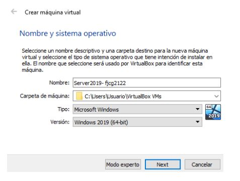Añadimos el tamaño de memoria según la que tu equipo pueda soportar.
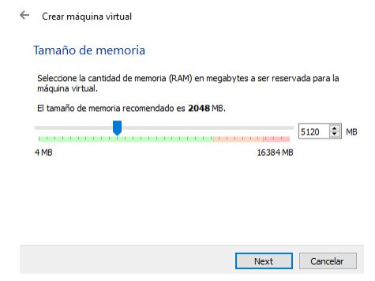 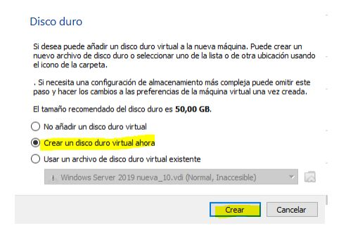 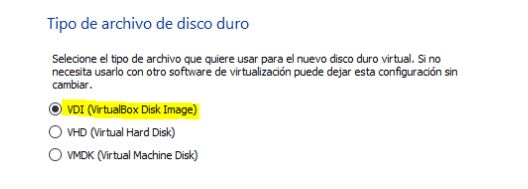 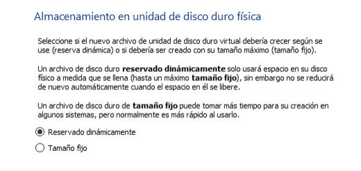Ingresamos un tamaño de 100 GB para nuestra máquina virtual.
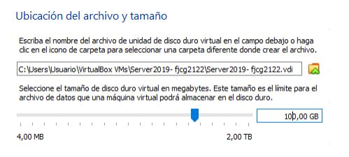Ya tenemos creada la máquina virtual, le damos a Iniciar.
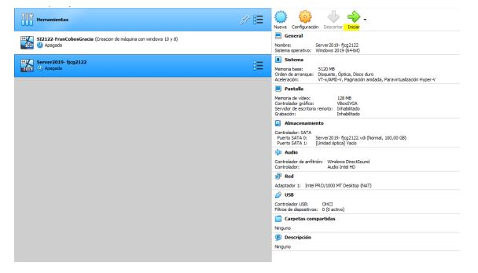2.- Instalación de Windows Server 2019.
Instala Windows Server 2019 teniendo en cuenta que durante su instalación tendrás que realizar operaciones relativas al particionado del disco duro virtual creando dos particiones: una partición de 80 GB donde se instalará el sistema y una partición de 20 GB que se utilizará para datos.
Añadimos la ISO de Windows Server 2019.
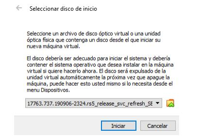 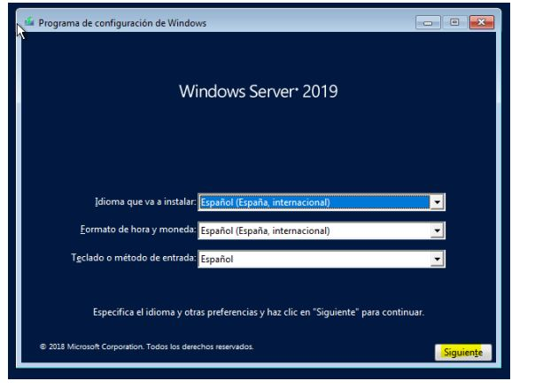 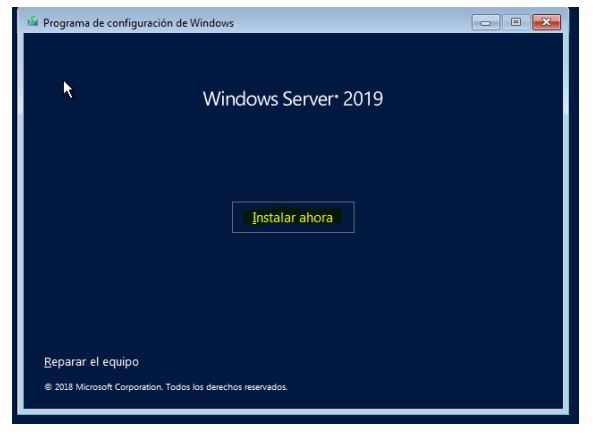Escogemos una versión para instalar (la segunda para tener entorno gráfico).
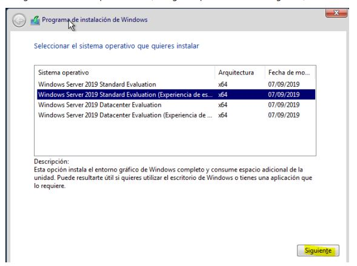Aceptamos los términos de licencia.
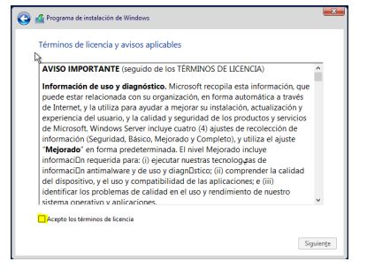Elegimos la opción personalizada para realizar las particiones siguientes:
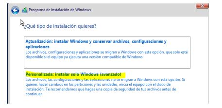Le damos a Nuevo para crear una partición.

Introducimos 80 GB (80000 MB) para la partición del sistema y dejamos 20 GB para datos.
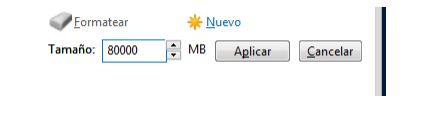Aceptamos.

Podemos observar que las particiones se han creado correctamente.
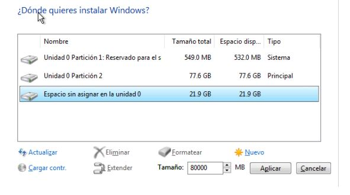Ya comenzará la instalación de Windows Server 2019.
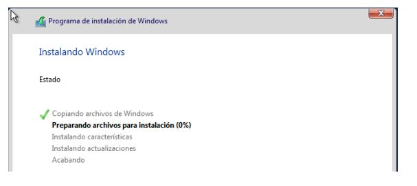Como clave al usuario Administrador puedes ponerle Ab_12345.
3.- Configuración inicial del servidor.
3.1 Configuración de funciones de red
Configurar las funciones de red. Abre una consola ejecutando CMD y
comprueba ejecutando ipconfig /all la configuración de red actual de la máquina
virtual.
Apaga el servidor y accede en VirtualBox a Máquina → Configuración… y elige Red.
Observarás que, si no has cambiado el modo de funcionamiento de la tarjeta de red, esta se encuentra en modo NAT. En dicha pantalla, elige “Conectado a: Adaptador Puente”.
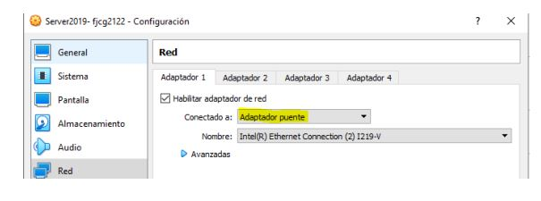Arranca la máquina virtual y vuelve a ejecutar CMD e ipconfig /all para comprobar la configuración de red. Observarás que ha cambiado y que has obtenido una dirección IP dentro de la red creada por el router al que está conectada la máquina física. Probablemente tu IP sea del tipo 192.168.0.x o 192.168.1.x.
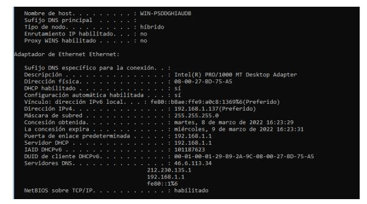Observando dicha configuración, vamos a hacer que la dirección IP del servidor sea estática y vamos a asignarle los mismos valores que nos ha dado el servidor DHCP de nuestra red física.
Para ello realizamos los siguientes pasos:
En el menú de contexto que aparece, elegimos Abrir el Centro de redes y recursos compartidos. (Haz clic derecho sobre el icono marcado)
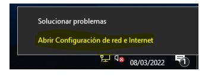En el apartado Ethernet haz clic en Cambiar opciones del adaptador.
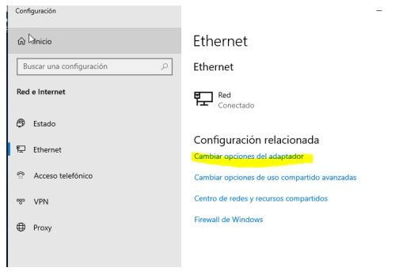Haz clic derecho sobre Ethernet, selecciona Propiedades.
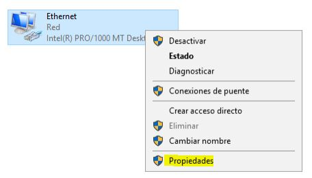 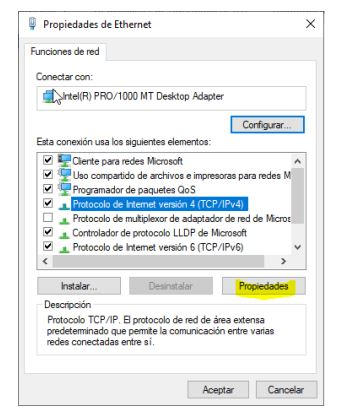Añadimos una dirección estática.
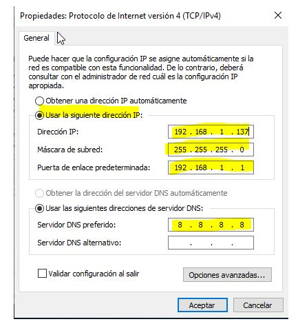3.2 Asignar nombre representativo al servidor
Debes cambiar el nombre del servidor para que sea server2019-iniciales_del_alumno.
Para ello, ve al explorador de archivos, haz clic derecho sobre Este equipo, y selecciona Propiedades.
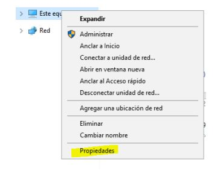Haz clic en Cambiar configuración.
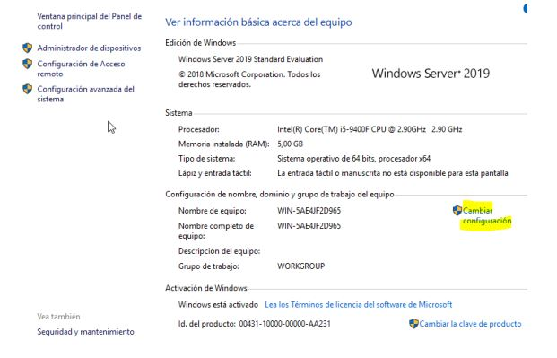En la ventana que aparece, haz clic en Cambiar…
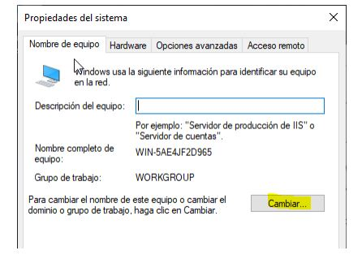Introduce un nombre para el equipo y acepta.
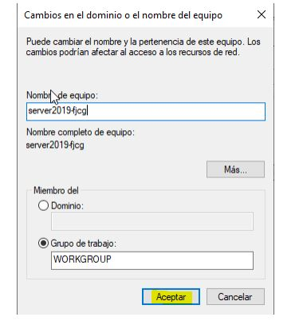Para que los cambios tengan efecto, reinicia la máquina.
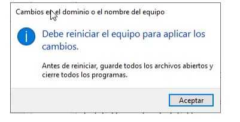